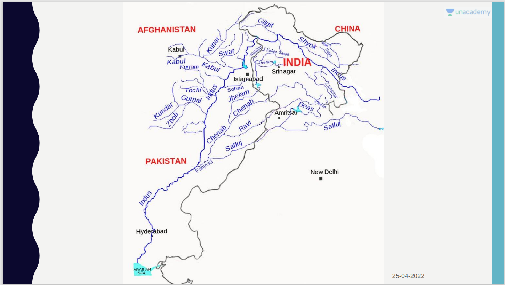

Prime Minister Modi visited Jammu and Kashmir on Sunday for the first time for a public engagement since the abrogation of Article 370 in August 2019.
Pakistan has objected to Prime Minister Narendra Modi's visit to Kashmir and laying of foundation stones for the construction of the Rattle and Kwar hydroelectric projects on the Chenab River, which it claimed was a "direct contravention" of the Indus Waters Treaty.
Mr. Modi laid the foundation stone of the Rattle and Kwar hydroelectric projects, an 850 MW facility to be constructed on the Chenab River in Kishtwar at a cost of around Rs 5,300 crore, and a 540 MW Kwar hydroelectric project to be built on the same river at a cost of over ₹4,500 crore.
The western rivers, namely Indus, Chenab and Jhelum, are allocated to Pakistan with India given some rights like agriculture, navigation, domestic use and also the unrestricted rights to develop hydroelectric power projects within the specified parameters of design and operations
"This is article was originally written by- Prashant Dhawan - WordAffairs"